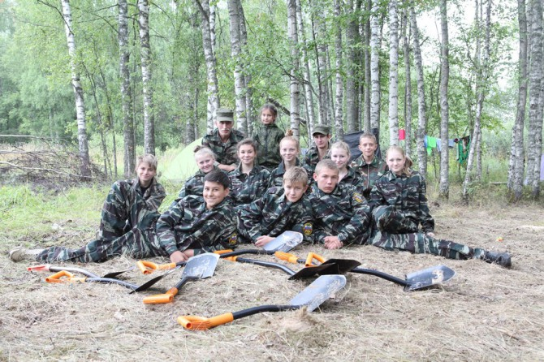
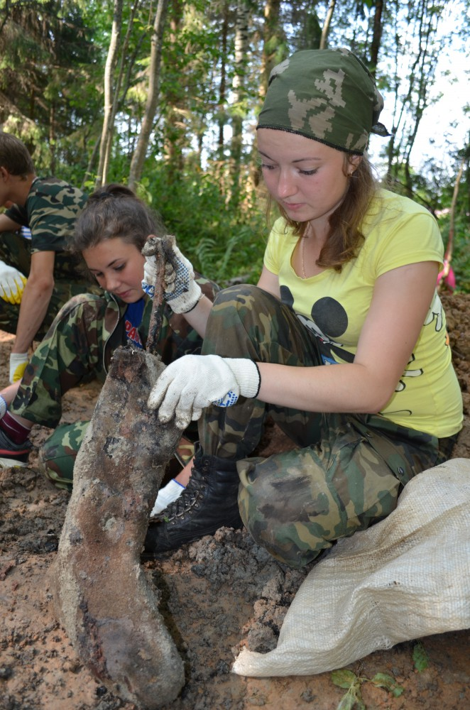

|
2015 год в России проходит под знаком 70-летия Победы в Великой Отечественной войне. Это не только большой праздник, пожалуй, главный для граждан нашей страны, но и время подведения некоторых итогов того, что мы знаем о самой масштабной и кровопролитной войне в истории человечества. Повод подвести черту под тем, как мы сохраняем память о ней и возвращаем к жизни имена забытых и неизвестных героев той драмы непревзойденного мужества.
Четверть века экспедиций
И здесь в центре внимания оказывается поисковое движение, объединяющее в Тверской области 42 отряда. Это круглогодичная работа по поиску незахороненных останков воинов, павших на полях сражений, для возможной идентификации бойцов и дальнейшего их перезахоронения со всеми воинскими почестями.
В Верхневолжье расположено 16 «боевых» районов. По различным непроверенным данным, незахороненными у нас лежит от 1 до 2 млн бойцов. Тверская земля была территорией проведения нескольких крупных операций. Чего стоит один только Ржев, оставивший в своих болотах сотни тысяч защитников Родины!
Масштабная поисковая работа ведется в регионе с 1988 года. Более чем за четверть века перезахоронены с воинскими и духовными почестями останки более 50 тысяч советских солдат, установлено более 4,5 тысячи имен без вести пропавших воинов.
“История с полей”
Из экспедиций поисковики постоянно возвращаются с массой историй, где переплетены и человеческое горе, и счастье, когда удается опознать погибшего бойца или неимоверными усилиями возродить то, что, казалось бы, навсегда забрала земля. Тверитянам хорошо знакома целая эпопея упорства и пота, как в 2012 году из болота Западной Двины несколько поисковых отрядов доставали трактор «Сталинец» – артиллерийский тягач. Водолазу-экстремалу Константину Отчаянному пришлось несколько раз, рискуя жизнью, погружаться в трясину и на ощупь зацеплять технику…
Более свежая история связана с ржевскими поисковиками, в этом году она закончится после долгих и кропотливых пяти лет поисков. Всё началось с обнаружения места падения советского самолета: в 2010 году ржевский поисковый отряд «Следопыт» обнаружил технику на стыке Тверской и Смоленской областей, в лесу рядом с железной дорогой Ржев – Вязьма. Но к подъему боевой машины смогли приступить лишь спустя три года. На месте были найдены фрагменты самолета Ил-2 и останки летчика… Так началось «возвращение памяти» старшего сержанта Филиппа Ульяновича Бородина.
В декабре 1942 года он пропал без вести, выполняя задание на самолете Ил-2 № 4314. Когда начался поиск родственников, выяснилось, что своей семьи у молодого пилота не было, а родной брат погиб в 1943 году. Однако поисковикам из Киева удалось найти в селе Горловка Донецкой области внучатых племянников Филиппа Бородина, а те дали адрес родственников из Санкт-Петербурга… 22 июня этого года останки бойца будут перезахоронены со всеми воинскими почестями на мемориальном кладбище советских воинов в Ржеве.
Сергей Петухов, руководитель военно-исторического поискового центра «Память 29-й армии», объединяющего пять отрядов и названного в честь старейшего из них, с 25-летней историей, приводит красноречивые цифры по городу воинской славы Ржеву. За годы поисков на мемориальном кладбище в Ржеве перезахоронено 12 457 военнослужащих Красной армии, удалось установить имена 399 красноармейцев. Начиная с 1989 года непосредственно поисковым отрядом «Память 29-й армии» найдены останки 8560 советских военнослужащих, имена 242 из них установлены.
Ныне единым координатором движения и уполномоченной общественной организацией по проведению поисковых работ в Тверской области является научно-исторический военно-патриотический центр «Подвиг», также с 25-летним опытом поисковой деятельности.
От областного правительства сферу курирует комитет по делам молодежи. Областные власти уже несколько лет осуществляют стабильное финансирование поисковой работы. В бюджете региона предусматриваются средства на эти цели начиная с 2011 года. К примеру, в прошлом году размер государственной поддержки составил 2 млн рублей.

В конце февраля в Твери прошла конференция по вопросу создания региональной общественной организации «Поисковое движение России». Эта общероссийская организация уже имеет свои местные центры во многих областях страны. Теперь к ней присоединилось и Верхневолжье. В состав Совета регионального отделения вошли бойцы и командиры поисковых отрядов Тверской области, представители крупных региональных общественных организаций патриотической направленности. В их числе хорошо известные в регионе объединения: центр «Подвиг», фонд «Жить и помнить», ржевская общественная организация «Память 29-й армии», осташковский военно-патриотический отряд «Поиск».
В числе первоочередных задач регионального отделения – подготовка к проведению полевых экспедиций «Вахты Памяти 2015» и участие в работе единого волонтерского корпуса 70-летия Великой Победы. Ныне на территории области в составе 43 корпусов действует порядка 20 тыс. волонтеров. Их стараниями уже удалось благоустроить сотни воинских захоронений на тверской земле.
Председателем вновь созданной организации был избран директор Областного молодежного центра – подведомственного учреждения комитета по делам молодежи – Олег Сергеев. Одними из основных направлений работы центра являются актуализация отчетов деятельности поисковых отрядов и военно-патриотических клубов тверского региона, учет по паспортизации воинских захоронений, памятников и обелисков, организация мероприятий по гражданско-патриотическому воспитанию молодежи.
Сначала Школа, потом Вахта
Всероссийская акция «Вахта Памяти» в год большого юбилея Победы запланирована на 8 мая. Она означает символическое начало поискового сезона, когда отряды выдвигаются в экспедиции.
По итогам прошлого года в поисковых работах на территории Тверской области участвовали 74 отряда – местных и из других регионов страны. В боевых районах области были подняты останки 2574 бойцов Красной армии и проведено 12 мероприятий по торжественному перезахоронению погибших защитников Отечества. С помощью найденных медальонов – личных капсул с данными бойца – установлено 56 имен, найдены родственники 12 считавшихся пропавшими без вести солдат.

В рамках подготовки к 70-летию Великой Победы перед комитетом по делам молодежи совместно с центром «Подвиг» стоит и задача проведения областного слета «Школа молодого поисковика». С 2013 года молодежь Верхневолжья получила возможность пройти необходимое обучение «на поисковика». Так, в прошлом году в работе летней Школы на территории Ржевского района приняли участие 95 юных бойцов из Ржева, Ржевского, Бельского, Зубцовского, Конаковского, Жарковского, Лихославльского и Старицкого районов.
Школа – это не только заряд патриотизма и погружение в нелегкий труд поисковиков, это настоящий шанс найти свое призвание в жизни, получить массу полезных знаний, которые могут пригодиться в любом деле. В рамках обучения сотрудники МЧС, опытные поисковики проводят серию семинаров по истории Великой Отечественной войны в Тверской области, истории поискового движения. Ребят учат, как работать с архивными документами, как подготовить поисковую экспедицию, как правильно обращаться с металлоискателем и что делать при обнаружении взрывоопасных предметов, как оказать первую медицинскую помощь и просто выжить в экстремальных условиях. Школа поисковика – это и «школа выживания», начальная подготовка для тех, кто решит связать свою жизнь со службой Отечеству.
Сегодня поисковая деятельность перестала быть только увековечением памяти павших защитников Отечества, установлением имен без вести пропавших воинов. Это целый мир, открытый для любого, кому небезразлична судьба родной страны. В настоящее время поисковое движение переросло в целое направление по изучению военной истории России, стало формой воспитания, связанной со стремлением молодежи лучше узнать свою малую родину.
– Патриотическое воспитание – один из приоритетов работы правительства Тверской области, – часто подчеркивает губернатор Андрей Шевелев. – Своим примером поисковики учат молодых земляков любви к Родине, к нашей истории. Работа по поиску останков павших воинов и сохранению их памяти имеет огромное значение.
Автор: Станислав Гвизда. Источник: http://tverigrad.ru/publication/po-sledam-neizvestnykh-geroev-kak-razvivaetsya-poiskovoe-dvizhenie-v-tverskojj-oblasti
|